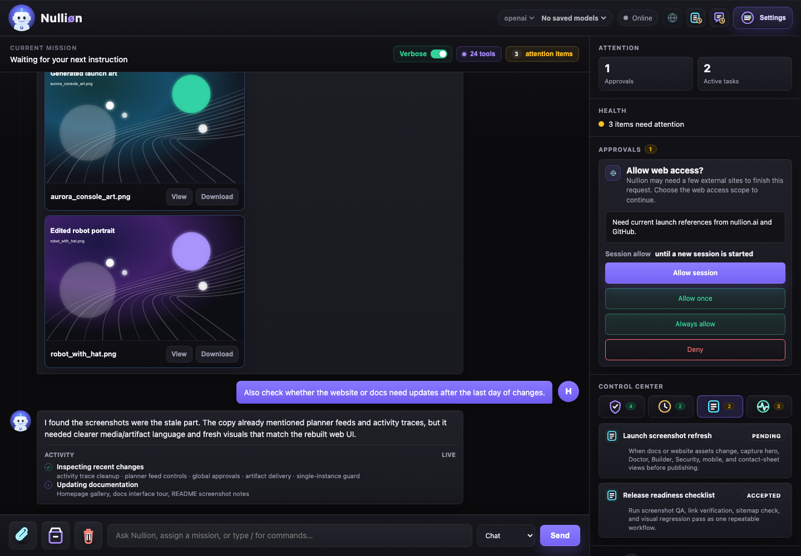

Getting Started
Nulliøn is a self-hosted AI assistant that runs locally on your machine. It connects to your selected model provider, exposes a web interface and Telegram operator, and can take real actions through tools: browse public pages, work with allowed local files, run approved terminal commands, transcribe media, and use preview email/calendar connectors. Sentinel approval policies decide what is allowed, what asks first, and what stays blocked, while workspace ownership keeps member schedules, approvals, grants, and provider connections separated.
Web Interface
Full chat UI at localhost:8742. Approve actions, follow planner cards, manage skills, view history, and configure everything from the browser.
Telegram Operator
Chat with Nulliøn from anywhere via Telegram. Slash commands cover approvals, skills, and system state while scheduled work is managed through chat intent and the web console.
Plugin System
Extend Nulliøn's capabilities with plugins for search, browser automation, workspace files, media processing, and preview account connectors.
Sentinel
Every tool call is governed by risk-based approval policies, capability grants, workspace ownership, and boundary checks for destinations, accounts, and file roots.
Workspaces
Approvals, grants, schedules, memory, delivery targets, and provider connections stay scoped to the workspace that started the request.
Warm Mini-Agents
Multi-step requests can split into bounded subtasks that run in parallel, then merge through the result aggregator.
Doctor
Background probes watch the model client, adapters, plugins, scheduler, database, browser backend, and warm pool.
Interface Tour
The web console keeps the conversation, verbose modes, media artifacts, Sentinel approvals, Doctor repairs, Builder proposals, schedules, memory, and active grants visible while Nulliøn works.
{kind=link}
{kind=link}
{kind=link}

Installation
Nulliøn requires Python 3.11+ and a model provider. The installer is the easiest path for nontechnical users; the manual commands are useful for contributors and server installs.
Quick install
curl -fsSL "https://raw.githubusercontent.com/shumanhi/nullion/main/install.sh?$(date +%s)" | bashirm https://raw.githubusercontent.com/shumanhi/nullion/main/install.ps1 | iexThe installer creates ~/.nullion, installs the app and launcher scripts, collects model credentials, and can start the local web UI automatically.
Manual install for developers
git clone https://github.com/shumanhi/nullion ~/.nullion/src
cd ~/.nullion/src
python3 -m venv ~/.nullion/venv
source ~/.nullion/venv/bin/activate
pip install -e .
export NULLION_MODEL_PROVIDER=openai
export NULLION_OPENAI_API_KEY=sk-...
export NULLION_MODEL=gpt-5.5,gpt-5.4,gpt-5.4-miniEnvironment variables
All settings can be configured via environment variables. The most important ones:
| Variable | Default | Description |
|---|---|---|
NULLION_MODEL_PROVIDER | — | Model provider, for example openai |
NULLION_OPENAI_API_KEY | — | Your OpenAI API key |
NULLION_MODEL | — | Comma-separated model preference list. The first entry is used by the runtime; later entries are kept for fallback/config UI clarity. |
NULLION_REASONING_EFFORT | medium | Thinking level for supported LLMs: low, medium, or high |
NULLION_WEB_PORT | 8742 | Web UI port |
NULLION_DATA_DIR | ~/.nullion | Runtime data, artifacts, memory, and checkpoint location |
NULLION_WORKSPACE_ROOT | — | Allowed filesystem root for workspace tools |
NULLION_TELEGRAM_BOT_TOKEN | — | Bot token from @BotFather |
NULLION_ENABLED_PLUGINS | — | Comma-separated plugin IDs to enable |
~/.nullion/.env and model credentials to ~/.nullion/credentials.json.
Environment variables take precedence when both are present.
First Run
Start the web server, tray app, or a messaging adapter:
# Web UI only
nullion-cli start
# Web UI in a native window / tray companion
nullion-tray
# Telegram operator
nullion-telegram
# Open the web interface
open http://localhost:8742Telegram setup
Set NULLION_TELEGRAM_BOT_TOKEN, start nullion-telegram, then message your bot. If NULLION_TELEGRAM_OPERATOR_CHAT_ID is blank, Nulliøn records the first authorized chat ID and rejects other callers after setup.
/status to verify the operator is running and connected. Use /health for a lightweight liveness check.
Auto-update
Nulliøn has a safe self-update system with automatic rollback. It takes a pip snapshot and git commit before pulling, runs a health check on the new version, and rolls back if the check fails.
# From CLI
nullion update
# From Telegram
/update
# From web UI
# Settings → System → Check for UpdatesTools
Nulliøn exposes a typed tool registry. Each tool has a name, description, risk level, side-effect class, and an approval requirement. Sentinel checks each tool call against the active policy before execution.
/tools in Telegram or open the web UI Tools panel to see the live tool inventory with current approval state.Built-in tools
| Tool | Risk | Side Effects | Description |
|---|---|---|---|
file_read |
LOW | Read-only | Read file contents within allowed workspace roots |
file_write |
MEDIUM | Write | Create or overwrite files in allowed paths |
web_fetch |
LOW | Network read | Fetch public web pages (SSRF-guarded; private IPs blocked) |
web_search |
LOW | Network read | Run a search query and return results |
terminal_exec |
HIGH | Write/exec | Execute a shell command (requires explicit approval) |
browser_navigate |
MEDIUM | Network/UI | Navigate a real browser session to a specific URL |
browser_click, browser_type, browser_scroll, browser_wait_for |
MEDIUM | Browser UI | Interact with a browser page when the browser plugin is enabled |
browser_extract_text, browser_screenshot |
LOW | Read-only | Read visible page text or capture a screenshot |
email_search |
LOW | Read-only | Search email (requires email_plugin) |
email_read |
LOW | Read-only | Read a single email message |
calendar_list |
LOW | Read-only | List upcoming calendar events |
set_reminder, list_reminders |
LOW | Local schedule | Create and list local reminder records |
create_cron, list_crons, run_cron, toggle_cron, delete_cron |
MEDIUM | Local schedule | Manage scheduled background tasks |
audio_transcribe |
LOW | Local compute | Transcribe audio to text using local model |
image_extract_text |
LOW | Local compute | OCR text from image files |
image_generate |
MEDIUM | Local compute/write | Generate an image from a prompt via local provider |
Tool risk levels
- LOW — read-only or network-read operations. Sentinel can auto-approve based on grant history.
- MEDIUM — write operations, external side effects, or account access. Ask-on-first-use by default.
- HIGH — irreversible or broad-scope actions (shell exec, account mutations). Always ask unless explicitly granted.
Plugins
Plugins are optional capability packs. A plugin registers tools into the tool registry and binds to a provider adapter that handles the actual integration. The kernel stays provider-agnostic; providers live outside it.
email_plugin + google_workspace_provider + your Google account.
Plugin catalog
search_plugin
Search and fetch public web pages. Providers include built-in search, Brave, Google Custom Search, Perplexity, and DuckDuckGo Instant Answers.
Availablebrowser_plugin
Agent browser sessions with navigation, click/type/scroll, screenshots, and text extraction. Playwright or Chrome/Brave CDP backend.
Availableworkspace_plugin
File and project tools within allowed workspace roots. Path traversal fully sandboxed.
Availablemedia_plugin
Audio transcription (whisper.cpp), image OCR (Tesseract), optional image generation (ComfyUI, SD).
Availableemail_plugin
Search and read email. Google Workspace preview available. Microsoft 365 and IMAP/SMTP planned.
Previewcalendar_plugin
List and query calendar events. Google Workspace preview. Microsoft 365 and Apple Calendar planned.
Previewmessaging_plugin
Account-level messaging tools are planned. Telegram, Slack, and Discord are available today as chat adapters, not account plugins.
PlannedEnabling plugins
# Enable specific plugins
NULLION_ENABLED_PLUGINS=search_plugin,browser_plugin,workspace_plugin,media_plugin
# Bind plugins to providers
NULLION_PROVIDER_BINDINGS=search_plugin=builtin_search_provider,media_plugin=local_media_provider
# Workspace configuration
NULLION_WORKSPACE_ROOT=/Users/you/Projects
NULLION_ALLOWED_ROOTS=/Users/you/Projects,/Users/you/.nullion/.nullion-artifacts
# Browser backend
NULLION_BROWSER_ENABLED=true
NULLION_BROWSER_BACKEND=auto # playwright | cdp | autoMedia plugin configuration
NULLION_ENABLED_PLUGINS=search_plugin,workspace_plugin,media_plugin
NULLION_PROVIDER_BINDINGS=search_plugin=builtin_search_provider,media_plugin=local_media_provider
# Audio transcription (whisper.cpp or faster-whisper)
NULLION_AUDIO_TRANSCRIBE_COMMAND='whisper-cli -f {input} --language {language} --output-txt -'
# Image OCR (tesseract is the default if omitted and present)
NULLION_IMAGE_OCR_COMMAND='tesseract {input} stdout'
# Image generation (ComfyUI / Stable Diffusion wrapper)
NULLION_IMAGE_GENERATE_COMMAND='/usr/local/bin/generate-image {prompt_file} {output} {size}'Building a plugin
Plugins are boring adapters. Keep secrets and provider-specific behavior out of the kernel. Register tools with stable capability names, not provider names.
from nullion.tools import ToolRegistry, ToolSpec, ToolRiskLevel, ToolSideEffectClass
def register_example_plugin(registry: ToolRegistry, *, provider_callable) -> None:
registry.register(
ToolSpec(
name="example_lookup",
description="Look up something through the example provider.",
risk_level=ToolRiskLevel.LOW,
side_effect_class=ToolSideEffectClass.READ_ONLY,
requires_approval=True,
),
lambda invocation: provider_callable(invocation.arguments),
)
registry.mark_plugin_installed("example_plugin")Plugin author checklist
- Use stable capability names like
email_search, not provider names - Expose provider adapters separately from capability registration
- Declare read/write behavior accurately in
side_effect_class - Set
requires_approval=Truefor account, network, filesystem, or external side effects - Emit useful errors when credentials or provider dependencies are missing
- Never claim a capability is installed unless its tools are actually registered
- Keep account identities and secrets out of normal logs
- Write tests for registration, provider failure, and policy boundaries
Slash Commands
These commands route through the shared operator command handler. They are available from Telegram and from the web chat command path; Slack and Discord use the same messaging runtime for authorized users.
General
/helpShow the quick-reference command menu/help commandsFull command list/chat <message>Explicitly route a message to the assistant (useful when auto-chat is off)/newClear conversation history and start fresh/pingLiveness check — returns "pong" if the operator is responsive/versionShow installed version and git commitSystem
/statusFull runtime status: active capsules, queue depth, model, uptime/status activeShow only active work/status <capsule_id>Status for one specific capsule/healthLightweight runtime health summary/uptimeCurrent operator runtime uptime/verbose [off|planner|full|status]Choose activity trace and planner task-card visibility/thinking [on|off|status]Show or hide provider reasoning summaries separately from final replies/streaming [on|off|status]Toggle streamed replies where the adapter supports them/updateUpdate Nulliøn safely with automatic rollback/restartRestart the bot process/system-contextShow internal system context/codebaseShow abstract codebase summaryModels
/modelsList available models and their identifiers/model <name>Switch to a different model, for example gpt-5.5Approvals
/approvalsList all pending approval requests/approval <id>Show details for one approval request/approve <id>Approve a pending tool call/deny <id>Deny a pending tool call/grantsList active permission grants/grant <id>Show one permission grant/revoke-grant <id>Revoke an active permission grantSkills & Builder
/skillsList all saved skills/skill <id>Show one saved skill/skill-history <id>Show revision history for a skill/update-skill <id> <field> <value>Update a skill field inline/revert-skill <id> <revision>Revert a skill to a prior revision/proposalsList Builder skill proposals awaiting review/proposal <id>Show one proposal/accept-proposal <id>Accept and save a skill proposal/reject-proposal <id>Reject a proposal/archive-proposal <id>Archive a proposal without rejecting/auto-skill [conv_id]Scan conversation history and propose automatable skills/accept-skill <n>Accept skill proposal number n from the last /auto-skill runPlugins & Skill Packs
/pluginsShow installed plugins and their status/plugins availableShow full plugin catalog/plugin <id>Show setup details for one plugin/toolsShow the full tool inventory/skill-packsShow enabled and available reference skill packs/skill-packs availableFull skill pack catalog/skill-pack <id>Show setup details for one skill packDoctor
/doctorList active Doctor health actions/doctor <n>Show details for health action number n/doctor start <n>Mark health action n as in-progress/doctor complete <n>Mark health action n as resolved/doctor dismiss <n>Dismiss a health action without acting/doctor run <id> <doctor:action>Run a Doctor playbook action from text-only chatBackups & Recovery
/backupsList available backup generations/restoreRestore the newest backup/restore latestSame as /restore/restore <generation>Restore a specific backup generationSentinel
Sentinel is the approval and policy engine. Every tool call passes through Sentinel before execution. It checks the tool's risk level against the active policy, your permission grant history, the initiating workspace, and any pending approvals to decide whether to allow, ask, or block the action.
Approval modes
Risk-Based (default)
Low-risk read-only tools run automatically. Medium and high-risk tools ask for approval on first use, then remember your answer as a permission grant.
Ask-All
Every tool call asks for explicit approval, regardless of risk level or prior grants. Use this when you want full oversight of all actions.
Allow-All
All tools run without approval. Use only in fully trusted, isolated environments. Sentinel still logs all tool calls for audit.
Permission grants
When you approve a tool call, Sentinel can save a permission grant for the tool capability. Boundary policy and workspace ownership are checked separately, so a grant for web_fetch does not automatically allow every new domain, a grant for file_read does not automatically allow every path, and a member's approval does not become a global admin grant.
- One-time — approve only this specific invocation
- Pattern grant — approve all calls to this tool matching the same argument shape
- Session grant — approve until the current session ends
- Permanent grant — approve indefinitely (revocable via
/revoke-grant)
Boundary policy
Boundary rules govern the resources a granted tool can reach. They cover outbound domains, browser destinations, filesystem roots, account identities, workspace IDs, and other scoped resources. A task may keep running in parallel while one mini-agent waits at a boundary approval gate.
/grants periodically to review active grants and /revoke-grant <id> to remove any you no longer need.
Approval flow
When a tool requires approval, Nulliøn pauses the task and sends you the approval request via Telegram and/or the web UI. You can:
- Approve or deny inline in Telegram using the inline keyboard buttons
- Use
/approve <id>or/deny <id>commands - Approve from the web UI approval panel
Builder & Skills
The Builder watches your conversations and proposes reusable skill definitions for patterns it sees repeated. Skills are saved prompt fragments that give Nulliøn specific instructions for recurring tasks. They can be versioned, edited, and reverted.
Skills
A skill is a named instruction block that Nulliøn prepends to its context when the skill name matches the current task. Skills let you encode domain knowledge, preferred formats, and workflow steps without repeating them in every message.
Name: weekly-summary
Trigger: "weekly summary" | "summarize this week"
Instructions:
- Pull calendar events from the past 7 days
- Summarize completed tasks from chat history
- List open approvals and pending crons
- Format as: ### This Week — [dates]
followed by bullet sections for Events, Completed, and Open ItemsAuto-skill builder
Run /auto-skill to scan recent conversations and get proposed skills for patterns Nulliøn detected. The web control plane also surfaces Builder proposals when repeated workflows are detected. Proposals are reviewable before activation; Builder does not silently change the live instruction set.
/auto-skillScan recent history and propose new skills/auto-skill <conv_id>Scan a specific conversation/accept-skill <n>Accept proposal number n from the last runSkill packs
Skill packs are curated collections of workflow instructions. The Google Skills pack, for example, adds Google Cloud and Gemini product guidance; it does not grant Gmail, Calendar, Drive, or Cloud account access by itself.
docs/skill-packs.md in the repo for details on authoring skill packs and the security rules that govern skill pack loading.Memory compaction
The Builder maintains a compact memory store that survives conversation context limits. Key facts, preferences, and recurring patterns are summarized and stored. When context grows large, the compactor runs write-then-delete to ensure crash safety: new entries are written before old ones are removed.
Skill pack separation
Skill packs teach workflow knowledge but never grant capabilities. A Google skill pack can explain good Google Cloud or Workspace workflows, but email, calendar, browser, search, and filesystem access still require the corresponding plugin and Sentinel approval.
Schedules
Nulliøn has a built-in cron system for scheduling recurring tasks. Each cron has a name, cron schedule expression, task description (plain language instruction sent to the assistant), workspace owner, and delivery channel.
Creating a scheduled task
Tell Nulliøn directly in chat:
Every morning at 8am, check my calendar for today's events and send me a summary.
Every Sunday at 6pm, pull this week's completed tasks from chat history and write a summary to ~/Documents/weekly-review.mdCron schedule expressions
# ┌───────── minute (0-59)
# │ ┌───────── hour (0-23)
# │ │ ┌───────── day of month (1-31)
# │ │ │ ┌───────── month (1-12)
# │ │ │ │ ┌───────── day of week (0-7, Sunday=0 or 7)
# │ │ │ │ │
0 8 * * * # Every day at 8am
0 9 * * 1-5 # 9am on weekdays
0 18 * * 0 # 6pm on Sundays
*/15 * * * * # Every 15 minutesManaging crons
Ask Nulliøn in natural language to create, pause, resume, run, or remove scheduled work. The web console remains available for direct inspection and edits.
Delivery routing
Scheduled work preserves the channel that created it when possible. Web-created jobs deliver to
the web operator conversation; Telegram, Slack, and Discord jobs deliver to their configured
operator target. Legacy jobs with no explicit channel prefer Telegram when
NULLION_TELEGRAM_OPERATOR_CHAT_ID is configured, then fall back to web.
MEDIA: directives, so image/audio/file outputs can be delivered through the same adapter that owns the scheduled job.
Chat History
All conversations are stored locally in a SQLite-backed store. The web UI provides a calendar view to browse by day and a full message search. The auto-skill builder uses conversation history to propose new skills.
Storage
Messages are stored with full context: role, content, timestamp, session ID, and any tool use. The store uses a calendar index for efficient date-range queries.
Web UI calendar
The chat history panel in the web UI shows a calendar where days with conversations are highlighted. Clicking a day loads all messages from that session. The month navigation uses YYYY-MM format for API queries.
REST API
| Endpoint | Method | Description |
|---|---|---|
/api/history | GET | List conversation sessions |
/api/history/<session_id> | GET | Get all messages in a session |
/api/history/calendar/<YYYY-MM> | GET | Get days with conversations in a month |
/api/history/day/<YYYY-MM-DD> | GET | Get all conversations for a specific day |
Doctor
Doctor is Nulliøn's health monitoring and self-repair system. It runs background checks on all critical subsystems and attempts automatic recovery actions when issues are detected. If the main runtime or chat adapters are already down, use the separate recovery control plane described below.
Health checks
- Model client — API key validity and connectivity
- Plugin registry — All enabled plugins are loaded and registered
- Cron scheduler — Scheduler is running and next-run times are valid
- Database — Chat store and memory store are accessible
- Operator — Telegram or web operator is connected and responsive
- Browser backend — Playwright or CDP browser sessions can launch and capture pages
- Warm pool — Mini-agent pool capacity is available for parallel task execution
Recovery actions
When a subsystem reports unhealthy, Doctor attempts:
- Reloading the plugin registry
- Reconnecting the Telegram bot
- Restarting the cron scheduler
- Reinitializing degraded warm-pool workers
- Notifying the operator via Telegram if recovery fails
Health actions
Some health issues require human action rather than automatic recovery. Doctor surfaces these as numbered health actions you can manage via slash commands or the web UI:
/doctorList active health actions with severity and status/doctor start <n>Mark action n in-progress (signals you are handling it)/doctor complete <n>Mark resolved/doctor dismiss <n>Dismiss without actingGateway notifications
When Nulliøn restarts it sends a "going down / back online" notification to the operator and all active members. Gateway lifecycle events are stored for 30 days and visible in the web UI status panel.
Check current health status with /health (summary) or /status (detailed).
Recovery
nullion-recovery is a tiny out-of-band control plane for
break-glass operations. It can keep working when the web app, runtime,
or normal chat adapters are unhealthy.
Local recovery commands
nullion-recovery statusShow web health, service status, runtime backups, and config backup statenullion-recovery servicesInspect launchd/process state for web, Telegram, Slack, Discord, tray, and recoverynullion-recovery restart telegramRestart the normal Telegram adapternullion-recovery restart allRestart web plus launchd-managed chat adaptersnullion-recovery snapshot-configCopy .env, credentials, users, preferences, and connections to a timestamped backupnullion-recovery restore runtime 0Restore the latest runtime checkpoint backupnullion-recovery restore config latestRestore the newest config snapshotTelegram takeover
Recovery can use a dedicated recovery Telegram bot token, or it can fall
back to the normal NULLION_TELEGRAM_BOT_TOKEN and
NULLION_TELEGRAM_OPERATOR_CHAT_ID. When it uses the normal
bot token, it waits until ai.nullion.telegram is down before
polling, so the normal adapter and recovery process do not consume the
same Telegram updates.
/statusRecovery status from Telegram/servicesService inventory from Telegram/restart telegramBring the normal Telegram adapter back/restore config latestRecover .env and credential snapshots after a bad save or updateRecovery HTTP
For local automation, start the tiny HTTP surface on a separate port:
nullion-recovery serve --port 8020
curl http://127.0.0.1:8020/status
curl 'http://127.0.0.1:8020/command?q=/restart%20telegram'--no-wait makes it fail fast instead.Multi-User
Nulliøn starts as a single-user installation with one admin operator. Multi-user mode can be enabled to let additional members connect via Telegram, Slack, or Discord, each with their own provider connections and workspace access.
User model
Each user has: a display name, a role (admin or member), an optional workspace ID, and one or more messaging identities (Telegram chat ID, Slack user ID, Discord user ID). Users are stored in ~/.nullion/users.json.
Authorizing users
Members are authorized by adding them in Settings → Users or editing ~/.nullion/users.json directly. Set messaging_channel to telegram, slack, or discord and the corresponding messaging_user_id.
{
"multi_user_enabled": true,
"users": [
{
"user_id": "admin",
"display_name": "Alice",
"role": "admin",
"telegram_chat_id": "123456789"
},
{
"user_id": "member_bob",
"display_name": "Bob",
"role": "member",
"messaging_channel": "slack",
"messaging_user_id": "U0123ABCDE"
}
]
}Member workspace connections
Once multi-user is enabled, each member can have their own provider connections (e.g. their own Gmail account via Himalaya). The Connections panel only lists providers required by auth-required skills and provider bindings; instruction-only skills do not need a connection row. Tool calls from that member use their workspace connection. If a member has no connection for a plugin, Nulliøn reports that the provider is not connected for their workspace.
Managing users
Use Settings → Users in the web UI, or edit ~/.nullion/users.json when running headless. Changes are read by the messaging authorization layer without needing to change the assistant prompt.
Skill Packs
Skill packs are optional reference instructions. They teach Nulliøn how to approach a product area or workflow — when to use which tools, what sequences work well, what to watch out for. They do not grant tool access; the relevant plugin must still be enabled and approved.
Built-in catalog
| Pack | Status | Covers |
|---|---|---|
google/skills | Available | Gemini API, BigQuery, Cloud Run, Cloud SQL, Firebase, GKE, AlloyDB, Google Cloud auth, network observability, Well-Architected guidance |
nullion/web-research | Built-in | Search, source comparison, citation habits, and current-information workflows |
nullion/browser-automation | Built-in | Browser navigation, UI inspection, screenshots, forms, and local web-app testing |
nullion/files-and-docs | Built-in | Local files, reports, spreadsheets, slide decks, and document workflows |
nullion/pdf-documents | Built-in | PDF creation, conversion, verification, image-aware reports, and attachment delivery |
nullion/email-calendar | Built-in | Inbox triage, drafted replies, meeting prep, reminders, and calendar summaries |
nullion/github-code | Built-in | Repository work, code review, issues, pull requests, release notes, and CI triage |
nullion/media-local | Built-in | Audio transcription, image OCR, image understanding, and local image-generation workflows |
nullion/productivity-memory | Built-in | Task planning, daily summaries, recurring workflows, memory, preferences, and follow-ups |
nullion/connector-skills | Built-in | API connector gateways, MCP workflows, account authorization checks, and custom HTTP bridges |
Auth-required skills
Custom skill packs are available to all enabled workspaces when they are instruction-only. If a SKILL.md mentions API keys, OAuth, tokens, credentials, secrets, or login requirements, Nulliøn treats that pack as auth-required and creates a provider entry for Settings → Users → Connections.
When a native account provider fails because its credential is missing or unauthorized, Nulliøn surfaces active external connector providers to the agent so it can try a relevant enabled connector skill before declaring that account access is unavailable. Connector skills still need concrete instructions and a valid connector URL; tokens alone do not create access.
Installing a skill pack
Skill packs can be installed from a GitHub repository, a Git URL, or a local directory containing SKILL.md files. Installation copies files into ~/.nullion/skill-packs and does not execute any scripts.
# Install from a local folder (e.g. OpenClaw-style skills)
nullion-cli skill-pack install ~/.openclaw/workspace/skills --id openclaw/local-skills
# Install from a GitHub repository
nullion-cli skill-pack install https://github.com/example/skills.git --id example/skills
# List installed packs
nullion-cli skill-pack listYou can also install from the web UI: Settings → Learning and planning → Skill packs. Paste a local folder path or Git URL, optionally provide an ID, then choose Install and Enable. Restart Nulliøn after changing enabled packs.
SKILL.md files before enabling packs from public sources.Enabling via env
NULLION_ENABLED_SKILL_PACKS=google/skillsCommands
/skill-packsShow enabled and available skill packs/skill-packs availableFull skill pack catalog/skill-pack <id>Show setup details for one packMessaging Adapters
Nulliøn ships with four operator interfaces: Telegram (built-in), Slack (Socket Mode), Discord, and a Web UI. All four route through the same platform-agnostic command handler — every slash command, approval flow, and skill proposal works identically regardless of which interface you use. You can run multiple adapters simultaneously.
| Adapter | Status | Transport | Key dependency |
|---|---|---|---|
| Telegram | Built-in | Long poll | python-telegram-bot |
| Slack | Shipped | Socket Mode (WebSocket, no public URL) | slack-bolt |
| Discord | Shipped | Gateway WebSocket | discord.py |
| Web UI | Built-in | FastAPI + WebSocket at :8742 | — |
Telegram
Telegram is Nulliøn's reference channel — every feature is available here first. The adapter uses long polling: Nulliøn reaches out to Telegram's servers, so no public URL or port-forwarding is required. It reconnects automatically after network blips and sends you a 🟢 Nullion is back online message after a crash-recovery rebuild.
1 · Install the Python dependency
pip install "python-telegram-bot[job-queue]"2 · Create a bot with @BotFather
- Open Telegram and start a chat with @BotFather.
- Send
/newbotand follow the prompts to pick a name and username (must end inbot). - Copy the bot token BotFather gives you — it looks like
<bot-id>:<bot-token>. - Optional but recommended: send
/setprivacy→ select your bot → Disable. This is only needed if you plan to add the bot to groups; for a personal DM bot the default is fine. - Optional: send
/setcommandsto register slash-command hints (see table in the Slash Commands section).
3 · Configure .env
NULLION_TELEGRAM_BOT_TOKEN=<your-bot-token>
# Lock the bot to a single chat ID.
# Leave blank on first run — Nullion auto-discovers your ID from the first message you send,
# writes it here, and rejects all other callers going forward.
NULLION_TELEGRAM_OPERATOR_CHAT_ID=
# Route plain text messages to the AI assistant (not just slash commands).
# Defaults to true — set false to handle only slash commands.
NULLION_TELEGRAM_CHAT_ENABLED=true4 · Find your Telegram user ID
If you want to pre-populate NULLION_TELEGRAM_OPERATOR_CHAT_ID before first run,
forward any message to @userinfobot
and it will reply with your numeric ID.
Alternatively, just leave the variable blank — Nulliøn will auto-discover and save it on the first message.
123456789 — not your username.
Once set, Nulliøn rejects all messages from any other chat ID, including bot API requests that don't originate from your account.
5 · Authorize multi-user access
To allow other users to message Nulliøn, add them to ~/.nullion/users.json with their numeric Telegram ID:
{
"users": [
{
"id": "alice",
"display_name": "Alice",
"role": "member",
"messaging_channel": "telegram",
"messaging_user_id": "987654321"
}
]
}Members have access to the assistant but not operator commands (/restart, /doctor, etc.) — those remain locked to the owner chat ID.
6 · Start the adapter
nullion-telegram
# or run as part of the combined web + Telegram process
nullion-cli start --telegram
# or invoke directly
python -m nullion.telegram_appEnvironment variables
| Variable | Default | Description |
|---|---|---|
NULLION_TELEGRAM_BOT_TOKEN | — | Bot token from @BotFather. Required. |
NULLION_TELEGRAM_OPERATOR_CHAT_ID | — | Restrict all operator commands to this chat ID. Auto-discovered on first message if blank. |
NULLION_TELEGRAM_CHAT_ENABLED | true | When true, plain text messages are routed to the AI assistant. Set false to respond only to slash commands. |
NULLION_TASK_PLANNER_FEED_MODE | task | Planner task-card visibility used by /verbose planner and /verbose full. |
Crash recovery & self-healing
The Telegram adapter is wrapped in a supervised retry loop with exponential backoff (up to 60 s).
After three consecutive failures it rebuilds the entire service from the checkpoint file, then notifies you in Telegram.
Transient polling timeouts are silently retried without incrementing the failure counter.
Send SIGHUP to the process to trigger an immediate graceful rebuild without restarting the process.
# trigger a live service rebuild (reloads config, reconnects tools, no downtime)
kill -HUP $(pgrep -f nullion-telegram)Setup checklist
- Created bot via @BotFather and copied the token
- Set
NULLION_TELEGRAM_BOT_TOKENin.env - Started the adapter and sent your first message to trigger auto-discovery
- Confirmed
NULLION_TELEGRAM_OPERATOR_CHAT_IDwas written to.env - Verified Nulliøn rejects a message from a second account (unauthorized check)
- Tested a slash command (
/helpor/status) - Tested sending an image or audio file — Nulliøn should describe or transcribe it
/ or mention the bot by username (privacy mode on).
If you add Nulliøn to a group, use /setprivacy in @BotFather to Disable privacy mode so it sees all messages.
Authorization still applies — only users listed in users.json can interact with the bot.
Slack
The Slack adapter uses Socket Mode — a persistent outbound WebSocket connection from Nulliøn to Slack's servers. No public URL or inbound firewall rules are needed, which makes it safe to run entirely behind a NAT or on a laptop.
1 · Install the Python dependency
pip install slack-bolt2 · Create a Slack app
- Go to api.slack.com/apps and click Create New App → From manifest.
- Select your workspace, then paste the manifest below and click Next → Create.
- On the app's Basic Information page copy the Signing Secret.
- Go to OAuth & Permissions, click Install to Workspace, and copy the Bot User OAuth Token (
xoxb-…). - Go to Settings → Socket Mode, enable it, and generate an App-Level Token with the
connections:writescope. Copy that token (xapp-…).
App manifest
Paste this into the manifest editor when creating the app. It enables Socket Mode, subscribes to the right message events, and requests the minimum required scopes.
{
"display_information": {
"name": "Nulliøn",
"description": "Self-hosted AI operator — Nulliøn",
"background_color": "#7b63ff"
},
"features": {
"bot_user": {
"display_name": "Nulliøn",
"always_online": true
}
},
"oauth_config": {
"scopes": {
"bot": [
"chat:write",
"channels:history",
"groups:history",
"im:history",
"mpim:history",
"files:read",
"users:read"
]
}
},
"settings": {
"event_subscriptions": {
"bot_events": [
"message.channels",
"message.groups",
"message.im",
"message.mpim"
]
},
"interactivity": {
"is_enabled": false
},
"socket_mode_enabled": true,
"token_rotation_enabled": false
}
}OAuth scope reference
| Scope | Why it's needed |
|---|---|
chat:write | Send replies back to the channel or DM |
channels:history | Read messages from public channels the bot is in |
groups:history | Read messages from private channels the bot is in |
im:history | Receive direct messages to the bot |
mpim:history | Read group direct messages that include the bot |
files:read | Download image and audio file attachments |
users:read | Look up the display name of message senders |
3 · Configure environment variables
NULLION_SLACK_ENABLED=true
NULLION_SLACK_BOT_TOKEN=your-slack-bot-token
NULLION_SLACK_APP_TOKEN=your-slack-app-token
NULLION_SLACK_SIGNING_SECRET=xxxxxxxxxxxxxxxxxxxxxxxxxxxxxxxx4 · Start the adapter
nullion-slack
# or
python -m nullion.slack_app5 · Authorize users
Nulliøn ignores any Slack message from a user not in the authorized list.
Add users in Settings → Users (Web UI) or directly in ~/.nullion/users.json:
{
"users": [
{
"id": "usr_alice",
"role": "admin",
"messaging_channel": "slack",
"messaging_user_id": "U012AB3CD" // Slack member ID — found in profile → More → Copy member ID
}
]
}U for users or W for workspace users in Enterprise Grid.
Scope & setup checklist
- ☐ App created from manifest at api.slack.com/apps
- ☐ App installed to workspace — Bot Token (
xoxb-…) copied - ☐ Socket Mode enabled — App-Level Token (
xapp-…) withconnections:writecreated - ☐ Signing Secret copied from Basic Information
- ☐ Bot invited to relevant channels with
/invite @Nulliøn - ☐ Three env vars set in
.env - ☐ At least one user authorized in
~/.nullion/users.jsonwithmessaging_channel: "slack" - ☐
nullion-slackstarts without errors and logs "Starting Nullion Slack adapter"
im:history events for conversations the bot is already a participant in.
Discord
The Discord adapter uses the discord.py Gateway — a persistent WebSocket to Discord's event stream. Like Slack's Socket Mode, no inbound port or public URL is required. The critical requirement is enabling the Message Content privileged intent; without it the bot receives events but sees empty message bodies.
1 · Install the Python dependency
pip install discord.py2 · Create a Discord application and bot
- Go to discord.com/developers/applications and click New Application. Give it a name (e.g. Nulliøn).
- Open the Bot tab. Click Add Bot, then confirm.
- Under Privileged Gateway Intents, enable Message Content Intent. Save changes.
- Still on the Bot tab, click Reset Token and copy the bot token.
- Go to OAuth2 → URL Generator. Under Scopes select
bot. Under Bot Permissions select the permissions below. - Open the generated URL in your browser to invite the bot to your server.
Required bot permissions
| Permission | Why it's needed |
|---|---|
| Read Messages / View Channels | Receive messages in text channels |
| Send Messages | Post replies back to the channel |
| Read Message History | Allow the bot to see channel context |
| Attach Files | Send file attachments in responses |
| Use Slash Commands | Respond to slash-style command interactions if used |
3 · Configure environment variables
NULLION_DISCORD_ENABLED=true
NULLION_DISCORD_BOT_TOKEN=your-discord-bot-token4 · Start the adapter
nullion-discord
# or
python -m nullion.discord_appA successful start logs: Nullion Discord adapter connected as Nulliøn#1234
5 · Authorize users
Same pattern as Slack. Each authorized user needs messaging_channel: "discord" and their Discord user ID (not username) as messaging_user_id.
{
"users": [
{
"id": "usr_alice",
"role": "admin",
"messaging_channel": "discord",
"messaging_user_id": "123456789012345678" // 18-digit Discord user ID
}
]
}Setup checklist
- ☐ Application created at discord.com/developers/applications
- ☐ Bot user created and token copied
- ☐ Message Content Intent toggled on and saved
- ☐ Bot invited to server via OAuth2 URL with correct permissions
- ☐
NULLION_DISCORD_BOT_TOKENset in.env - ☐ At least one user authorized with
messaging_channel: "discord" - ☐
nullion-discordstarts and logs "Discord adapter connected"
Authorizing users across all adapters
Every message entering Nulliøn via Slack or Discord is checked against the authorized user list before any processing occurs.
Messages from unknown IDs receive an Unauthorized messaging identity. reply and are not forwarded to the assistant.
You can manage users in the Web UI under Settings → Users or edit ~/.nullion/users.json directly.
Changes take effect without a restart.
| Platform | ID to use | How to find it |
|---|---|---|
| Slack | Member ID (U… / W…) | Profile → ⋯ → Copy member ID |
| Discord | User ID (18-digit snowflake) | Developer Mode → right-click username → Copy User ID |
| Telegram | Numeric chat ID | NULLION_TELEGRAM_OPERATOR_CHAT_ID or auto-discovered on first message |
File & audio attachments
All adapters that support file uploads pass attachments through the same pipeline:
| Type | Formats | Handling |
|---|---|---|
| Images | PNG, JPEG, GIF, WebP | Passed directly to the model as vision content |
| Audio | AAC, FLAC, M4A, MP3, OGG, WAV, WebM | Auto-transcription hint injected; uses audio_transcribe tool when media_plugin is enabled |
Slack files are downloaded using the bot token's files:read scope. Discord attachments use the CDN URL embedded in the message event. All other file types are silently skipped.
Reply chunking
Long responses are automatically split to respect each platform's message length limit before sending. Slack replies are chunked at 39,000 characters; Discord replies at 1,900 characters (just under Discord's 2,000-character hard limit).
Visibility & Workspaces
Visibility modes
Controls how much of Nulliøn's internal activity is surfaced during a turn. Use /verbose planner for delegated-task planner cards only, /verbose full for planner cards plus the activity/tool trace, and /thinking for provider reasoning summaries.
| Mode | What you see |
|---|---|
/verbose off | Final response without activity trace or planner task cards |
/verbose planner | Planner and delegated-work task cards without the activity/tool trace |
/verbose full (default) | Activity/tool trace plus planner task cards |
/thinking on | Provider reasoning summaries shown separately from final replies when the selected model supports them |
Workspace ownership
Workspaces are the ownership boundary for multi-user and scheduled work. A request carries its workspace owner through task frames, Sentinel approvals, provider selection, file-root checks, memory, schedules, and final delivery.
| Surface | Workspace-scoped behavior |
|---|---|
| Approvals and grants | Permission grants are recorded for the initiating workspace and checked again when a task crosses a new workspace, account, destination, or file scope. |
| Provider connections | Member requests use that member workspace's configured connection. They do not silently fall back to the admin's provider account. |
| Schedules and delivery | Cron jobs preserve the workspace owner and route results back to the web, Telegram, Slack, or Discord destination that owns the scheduled work. |
| Files and memory | Workspace file tools stay inside allowed roots, while user preferences and memory remain tied to the relevant operator or member context. |
Provider Catalog
Providers are the service adapters that power plugins and auth-required skills. A plugin declares a capability (e.g. search); a provider delivers it (e.g. Brave Search). Swap providers without changing how Nulliøn uses the capability.
Search providers
| Provider ID | Requires | Notes |
|---|---|---|
builtin_search_provider | — | Default built-in web search and fetch |
brave_search_provider | NULLION_BRAVE_SEARCH_API_KEY | Brave Search API |
google_custom_search_provider | NULLION_GOOGLE_SEARCH_API_KEY + NULLION_GOOGLE_SEARCH_CX | Google Custom Search JSON API |
perplexity_search_provider | NULLION_PERPLEXITY_API_KEY | Perplexity Search API |
duckduckgo_instant_answer_provider | — | DuckDuckGo Instant Answer (no API key) |
Email providers
| Provider ID | Requires | Notes |
|---|---|---|
google_workspace_provider | Himalaya CLI installed, Gmail account profile configured | Gmail / Google Workspace via local Himalaya install |
custom_api_provider | NULLION_CUSTOM_API_BASE_URL + NULLION_CUSTOM_API_TOKEN | Any HTTP-based email API wrapper you host |
imap_smtp_provider | IMAP/SMTP host, username, and app password references | Workspace-specific mail credentials |
Skill-derived providers
Installed custom skill packs can define their own credential needs. Nulliøn derives provider IDs such as skill_pack_connector_example_skills from the pack ID when the pack requires account or API access, so new skills do not require hardcoded provider options in the UI.
Media providers
| Variable | Default | Description |
|---|---|---|
NULLION_AUDIO_TRANSCRIBE_COMMAND | — | Shell template: {input}, {language} placeholders |
NULLION_IMAGE_OCR_COMMAND | tesseract {input} stdout | Shell template for image OCR |
NULLION_IMAGE_GENERATE_COMMAND | — | Shell template: {prompt_file}, {output}, {size} placeholders |
NULLION_MEDIA_COMMAND_TIMEOUT_SECONDS | 120 | Timeout for any media shell command |
Wiring a provider
# Use Brave Search instead of the built-in provider
NULLION_PROVIDER_BINDINGS=search_plugin=brave_search_provider
NULLION_BRAVE_SEARCH_API_KEY=BSAxxxxxxxx
# Use Google Custom Search
NULLION_PROVIDER_BINDINGS=search_plugin=google_custom_search_provider
NULLION_GOOGLE_SEARCH_API_KEY=AIzaxxxxxxxx
NULLION_GOOGLE_SEARCH_CX=017xxxxxxxxxxxxxxxSecurity Model
Nulliøn runs locally and handles real actions. The security model is designed around the principle that the assistant should not be able to take actions the operator hasn't explicitly approved or pre-authorized.
Trust levels
| Level | Who | What they can do |
|---|---|---|
| Operator | You (via Telegram or web UI) | Full control: approve/deny actions, manage skills, configure plugins, update system |
| Assistant | Configured model provider | Execute tool calls within Sentinel policy; cannot modify policy directly |
| Tool | Plugin/tool code | Execute within declared scope; path traversal and SSRF protections enforced |
Protections in place
- Auth gate — Telegram operator is locked to a single authorized chat ID. No auth = no access, even on first run.
- Two-layer approvals — Tool capability grants and boundary policy are evaluated separately, so a granted tool still pauses when it crosses a new resource boundary.
- Encrypted chat database — Chat history is stored locally in encrypted SQLite rows. Legacy plaintext rows are migrated to encrypted format on startup.
- Sentinel redaction — Likely API keys, bearer tokens, passwords, Slack tokens, GitHub tokens, and Telegram bot tokens are scrubbed before chat records are persisted and before logs are displayed in the web UI.
- No telemetry — The control plane does not ship remote logging, cloud sync, or product analytics. Runtime state, memory, schedules, grants, and audit records stay local unless you explicitly connect an external provider.
- SSRF guard — Web fetch blocks private IPs (
is_private,is_loopback,is_link_local,is_reserved) and resolves DNS before fetching to prevent TOCTOU attacks. - Browser domain rules — Browser automation can enforce allowlists, blocklists, and private-network blocking before navigation.
- Path traversal — Workspace tools use
Path.resolve().relative_to(root)to block../escapes. Skill pack ZIP archives validate every member path before extraction to prevent malicious archives from writing outside the install directory. - Prompt injection — Message content is sanitized before being included in LLM transcripts. XML-like control sequences are escaped.
- Cron injection — Task descriptions are length-capped (2,000 chars) and fields are validated to prevent stored prompt injection.
- Rollback safety — Update rollback validates git commit hashes and requirements file content before executing.
- Localhost-only endpoints —
/api/restartand/api/healthreject non-localhost requests. - Security headers — CSP, X-Frame-Options, X-Content-Type-Options, and Referrer-Policy on all responses.
- Upload limits — File uploads enforce 50 MB limit and extension allowlist.
localhost and be accessed via Telegram or local network only. The web UI has no authentication layer by design — it assumes localhost trust.
Open Source, License & Security Reports
Nulliøn is released under the Apache License 2.0. The license grants broad rights to use, modify, distribute, and privately run the software, and it includes standard patent, warranty, and liability terms.
Release files
github.com/shumanhi/nullionCanonical public repository for the 0.1 releasesrc/nullionCurrent Python package namespace and module pathLICENSEApache License 2.0 terms for the projectSECURITY.mdPrivate vulnerability reporting path and safe public issue guidanceREADME.mdInstall instructions, product overview, screenshots, and license summaryOperator responsibility
Nulliøn can operate model providers, plugins, browser automation, local files, terminals, chat adapters, connected accounts, and scheduled work. You are responsible for choosing which API keys, file roots, third-party accounts, approval modes, schedules, plugins, and tools are enabled in your runtime.
Repository: github.com/shumanhi/nullion
Configuration
Configuration is resolved from environment variables, ~/.nullion/.env, and stored credentials in ~/.nullion/credentials.json. Direct environment variables win when the same setting appears in more than one place.
Full configuration reference
| Variable | Default | Description |
|---|---|---|
NULLION_MODEL_PROVIDER | — | Model provider, for example openai |
NULLION_OPENAI_API_KEY | — | OpenAI API key |
OPENAI_API_KEY | — | OpenAI-compatible fallback API key |
NULLION_MODEL | — | Comma-separated assistant model preference list. The first non-empty entry is used by the runtime; the rest stay visible for fallback-oriented settings. |
NULLION_REASONING_EFFORT | medium | Thinking level for providers/models that expose reasoning controls: low, medium, or high. Unsupported combinations omit the provider-specific parameter. |
NULLION_MINI_MODEL | — | Fast model for lightweight tasks, for example gpt-4o-mini |
NULLION_WEB_PORT | 8742 | Web UI port |
NULLION_DATA_DIR | ~/.nullion | Override for runtime data, artifacts, and checkpoint location |
NULLION_OPERATOR_NAME | operator | Display name used in system prompts and profile |
NULLION_SRC_DIR | auto-detect | Source repo root (for updates) |
NULLION_WORKSPACE_ROOT | — | Primary workspace root |
NULLION_ALLOWED_ROOTS | — | Comma-separated allowed filesystem roots |
NULLION_WEB_SESSION_ALLOW_DURATION | session | How long web UI permission grants last: session, 15m, 30m, 1h, 2h, 4h, today |
NULLION_ENABLED_PLUGINS | — | Comma-separated plugin IDs |
NULLION_PROVIDER_BINDINGS | — | Comma-separated plugin=provider pairs |
NULLION_BROWSER_ENABLED | false | Enable browser plugin |
NULLION_BROWSER_BACKEND | auto | Browser backend: playwright, cdp, auto |
NULLION_BROWSER_HEADLESS | true | Force Playwright headless mode. Set false to run a visible browser window. |
NULLION_BROWSER_PATH | — | Explicit path to the browser binary (overrides auto-detection) |
NULLION_BROWSER_CDP_URL | http://localhost:9222 | Chrome DevTools Protocol URL for the CDP backend |
NULLION_BROWSER_PREFERRED | — | Preferred browser name for auto-detection (chrome, firefox, etc.) |
NULLION_BROWSER_USER_DATA_DIR | — | Browser profile directory path (Playwright backend) |
NULLION_BROWSER_ALLOWED_DOMAINS | — | Comma-separated domain allowlist. If set, only these domains are reachable via browser tools. |
NULLION_BROWSER_BLOCKED_DOMAINS | — | Comma-separated domain denylist. Domains here are always blocked regardless of allowlist. |
NULLION_BROWSER_BLOCK_PRIVATE | true | Block private IPs and localhost from browser tool requests. Set false to allow intranet access. |
NULLION_TERMINAL_BACKEND_MODE | subprocess | Terminal execution mode: subprocess or launcher |
NULLION_TERMINAL_LAUNCHER_COMMAND | — | Command used to open a terminal session (launcher mode) |
NULLION_TERMINAL_LAUNCHER_ARGS | — | Extra arguments for the terminal launcher command |
NULLION_TELEGRAM_BOT_TOKEN | — | Telegram bot token from @BotFather |
NULLION_TELEGRAM_OPERATOR_CHAT_ID | — | Restrict operator commands to this Telegram chat ID. Auto-discovered on first message if blank. |
NULLION_TELEGRAM_CHAT_ENABLED | true | Route plain Telegram messages to the assistant. Set false to respond only to slash commands. |
NULLION_TASK_PLANNER_FEED_MODE | task | Planner task-card visibility used by /verbose planner and /verbose full. |
NULLION_RECOVERY_TELEGRAM_BOT_TOKEN | — | Optional dedicated bot token for recovery commands. If absent, recovery can fall back to the main Telegram bot token in takeover mode. |
NULLION_RECOVERY_TELEGRAM_ALLOWED_CHAT_IDS | — | Comma-separated chat IDs allowed to use recovery Telegram commands. Falls back to NULLION_TELEGRAM_OPERATOR_CHAT_ID. |
NULLION_SLACK_ENABLED | false | Enable the Slack adapter |
NULLION_SLACK_BOT_TOKEN | — | Slack bot OAuth token (xoxb-…) |
NULLION_SLACK_APP_TOKEN | — | Slack app-level token for Socket Mode (xapp-…) |
NULLION_SLACK_SIGNING_SECRET | — | Slack app signing secret from Basic Information page |
NULLION_SLACK_OPERATOR_USER_ID | — | Default Slack user ID for platform-routed cron delivery |
NULLION_DISCORD_ENABLED | false | Enable the Discord adapter |
NULLION_DISCORD_BOT_TOKEN | — | Discord bot token |
NULLION_DISCORD_OPERATOR_CHANNEL_ID | — | Default Discord channel ID for platform-routed cron delivery |
NULLION_AUDIO_TRANSCRIBE_COMMAND | — | Shell command for audio transcription |
NULLION_IMAGE_OCR_COMMAND | auto | Shell command for image OCR |
NULLION_IMAGE_GENERATE_COMMAND | — | Shell command for image generation |
NULLION_MEDIA_COMMAND_TIMEOUT_SECONDS | 120 | Timeout for media processing shell commands |
NULLION_BRAVE_SEARCH_API_KEY | — | Brave Search API key |
NULLION_GOOGLE_SEARCH_API_KEY | — | Google Custom Search API key |
NULLION_GOOGLE_SEARCH_CX | — | Google Custom Search engine ID |
NULLION_PERPLEXITY_API_KEY | — | Perplexity API key |
NULLION_CUSTOM_API_BASE_URL | — | Base URL for a custom HTTP provider |
NULLION_CUSTOM_API_TOKEN | — | Bearer token for the custom HTTP provider |
NULLION_ENABLED_SKILL_PACKS | — | Comma-separated skill pack IDs to enable (e.g. google/skills) |
NULLION_SKILL_PACK_DIR | ~/.nullion/skill-packs | Directory where skill pack files are installed |
NULLION_WEB_ACCESS_ENABLED | true | Enable web fetch and search tools. Set false to air-gap the assistant from the internet. |
NULLION_FILE_ACCESS_ENABLED | true | Enable file read/write/list tools. Set false to block all filesystem access. |
NULLION_TERMINAL_ENABLED | true | Enable the terminal execution tool. Set false to prevent shell command execution. |
NULLION_SKILL_LEARNING_ENABLED | true | Enable Builder skill detection and proposal. Set false to freeze the skill set. |
NULLION_BACKGROUND_TASKS_ENABLED | true | Enable background cron/scheduled task execution. |
NULLION_TOOL_LOOP_DOCTOR_THRESHOLD | 12 | Number of consecutive tool-loop iterations before Doctor escalation is triggered. |
NULLION_DOCTOR_ENABLED | true | Enable the Doctor self-healing system |
NULLION_MEMORY_ENABLED | true | Enable the Builder memory / compaction system |
NULLION_TASK_DECOMPOSITION_ENABLED | true | Enable LLM-based task decomposition for multi-step requests |
NULLION_MULTI_AGENT_ENABLED | true | Enable parallel multi-agent execution via the warm pool |
NULLION_PROACTIVE_REMINDERS_ENABLED | true | Allow the assistant to proactively surface reminders mid-conversation |
NULLION_ACTIVITY_TRACE_ENABLED | true | Capture per-turn activity traces for observability |
NULLION_TASK_PLANNER_FEED_ENABLED | true | Legacy toggle for delegated planner updates. Prefer NULLION_TASK_PLANNER_FEED_MODE. |
NULLION_CHECKPOINT_PATH | ~/.nullion/runtime.db | Override the runtime checkpoint file path |
Support & Troubleshooting
Start with the web UI status panel or /health. Doctor turns many problems into action cards, and the commands below give you a reliable path before digging into code.
Quick checks
/healthShort health summary with the most likely next action/statusDetailed runtime state, active missions, approvals, Doctor actions, and grants/doctorOpen health actions that may need repair or dismissal/approvalsWork paused because a tool call is waiting for approval/toolsConfirm which tools are actually registered in this runtime/pluginsConfirm enabled plugins and setup hints/backupsList local restore points before rolling back runtime statenullion-recovery statusUse when the web app or normal chat adapters are already downCommon fixes
| Symptom | Likely cause | What to try |
|---|---|---|
| Web UI will not open | Server is not running or port changed | Run nullion-web, then open http://localhost:8742. Check NULLION_WEB_PORT if you changed the port. |
| Web UI and Telegram are both down | Main runtime or chat adapter crashed during update/config save | Run nullion-recovery status, then nullion-recovery restart web telegram. If config was damaged, use nullion-recovery restore config latest. |
| Model replies fail | Missing provider key or model name | Open Settings → Model, run nullion-auth, or set NULLION_MODEL_PROVIDER, NULLION_MODEL, and the provider API key. |
| Telegram ignores you | Wrong bot token or unauthorized chat ID | Check NULLION_TELEGRAM_BOT_TOKEN and NULLION_TELEGRAM_OPERATOR_CHAT_ID. Send /status from the authorized account. |
| Slack or Discord receives no messages | Adapter disabled, token missing, or user not authorized | Set the adapter token variables, start nullion-slack or nullion-discord, and add the user ID in Settings → Users. |
| File tools cannot see a project | Workspace root not allowed | Set NULLION_WORKSPACE_ROOT or NULLION_ALLOWED_ROOTS, then restart the runtime. |
| Browser tools fail | Browser plugin/backend not configured | Enable browser_plugin, set NULLION_BROWSER_ENABLED=true, and use NULLION_BROWSER_BACKEND=auto first. |
| Email or a custom connector cannot read account data | Missing plugin/provider binding or workspace connection | Enable the matching plugin, then add the provider under Settings → Users → Connections. Use a workspace credential unless an admin intentionally shares a supported credential. |
| A task looks stuck | Waiting approval, blocked boundary, or unhealthy subsystem | Run /status active, then check /approvals and /doctor. |
Logs, updates, and rollback
Use the web UI logs panel or /status for everyday diagnosis. For updates, nullion update and /update take a snapshot, run health checks, and roll back when checks fail. Use /restore latest or /restore <generation> when you need to restore runtime state from a local backup.
Before filing an issue
- Include your operating system, install method, and Nulliøn version from
/version. - Include the failing command or web action and the output from
/health. - Redact API keys, bot tokens, OAuth tokens, and private file paths from logs.
- Say which adapter you used: Web UI, Telegram, Slack, Discord, or CLI.
API Reference
The web server exposes a local REST API at localhost:8742. These routes are for the bundled web UI and local automation; do not expose them to the public internet. Sensitive endpoints such as /api/restart and /api/health are localhost-only.
Chat & History
| Endpoint | Method | Description |
|---|---|---|
/api/chat | POST | Send a message, stream response via SSE |
/api/chat/history/{conv_id} | GET | Load up to 300 messages for a conversation |
/api/chat/history/{conv_id}/message | POST | Persist a single message to a conversation |
/api/chat/history/{conv_id}/archive | POST | Archive a conversation (keeps in history, hides from main chat) |
/api/chat/history/{conv_id} | DELETE | Clear all messages in a conversation |
/api/chat/history/{conv_id}/hard | DELETE | Hard-delete an archived conversation permanently |
/api/chat/conversations | GET | List archived conversations for the history panel |
/api/chat/analyze/{conv_id} | POST | Run the conversation analyser and return skill proposals (read-only) |
/api/chat/accept-skill/{conv_id}/{index} | POST | Accept skill proposal number index from the analyser |
/api/chat-services/restart | POST | Gracefully restart only the chat-layer services |
All-Channel History
| Endpoint | Method | Description |
|---|---|---|
/api/history/channels | GET | List all channels (telegram, slack, discord, web) that have history |
/api/history/calendar/{channel} | GET | Return a YYYY-MM-DD → count map for calendar highlighting. Query param: month=YYYY-MM |
/api/history/conversations/{channel}/{date} | GET | Conversations on a channel for a specific YYYY-MM-DD date |
/api/history/conversations/{channel}/{date} | DELETE | Hard-delete all conversations on a channel for a date |
Approvals & Policy
| Endpoint | Method | Description |
|---|---|---|
/api/approve/{id} | POST | Approve a pending tool-call request |
/api/reject/{id} | POST | Reject a pending tool-call request |
/api/decisions/{id}/revoke | POST | Revoke a prior approval decision |
/api/decisions/{id}/allow | POST | Allow a previously denied decision |
/api/permissions/{kind}/{id}/revoke | POST | Revoke a permission grant by kind and ID |
/api/domain-policy-rules | POST | Create or update a domain-level policy rule |
/api/sentinel/{escalation_id}/{action} | POST | Act on a Sentinel escalation (allow or deny) |
Skills & Proposals
| Endpoint | Method | Description |
|---|---|---|
/api/chat/analyze/{conv_id} | POST | Analyze a conversation and return skill suggestions |
/api/chat/accept-skill/{conv_id}/{index} | POST | Accept one analyzer suggestion as a saved skill |
Artifacts
| Endpoint | Method | Description |
|---|---|---|
/api/artifacts/{id} | GET | Retrieve a generated artifact by ID |
/api/artifacts/{id}/save | POST | Save / name a generated artifact |
System
| Endpoint | Method | Description |
|---|---|---|
/api/status | GET | Runtime status and active tasks |
/api/health | GET | Health check (localhost only) |
/api/version | GET | Current version string and git commit |
/api/logs | GET | Recent process log lines |
/api/update | GET | Trigger self-update with SSE progress stream |
/api/restart | POST | Restart the process (localhost only) |
/api/upload | POST | Upload a file (max 50 MB, allowed extensions only) |
/api/browser/open | POST | Open a URL in the connected browser instance |
/api/client-issue | POST | Report a client-side error for server-side logging |
Crons
| Endpoint | Method | Description |
|---|---|---|
/api/crons | GET, POST | List / create scheduled tasks |
/api/crons/{cron_id} | PATCH, DELETE | Update or delete a scheduled task |
Users & Connections
| Endpoint | Method | Description |
|---|---|---|
/api/users | GET, POST | List all users / create a new user |
/api/connections | GET, POST | List / create workspace provider connections |
Doctor & Gateway
| Endpoint | Method | Description |
|---|---|---|
/api/doctor/{action_id}/{action} | POST | Act on a Doctor health action. Actions include start, complete, and dismiss. |
/api/gateway/events | GET | Recent gateway lifecycle events (restart, online) |
Skill Packs
| Endpoint | Method | Description |
|---|---|---|
/api/skill-packs/install | POST | Install a skill pack from a local path or Git URL |
Configuration & Profile
| Endpoint | Method | Description |
|---|---|---|
/api/config | GET, POST | Read / update runtime configuration |
/api/preferences | GET, POST | Read / update user preferences |
/api/profile | GET, POST | Read / update the operator profile |
/api/version | GET | Current version string and build metadata |
http://localhost:8742/openapi.json when Nulliøn is running.